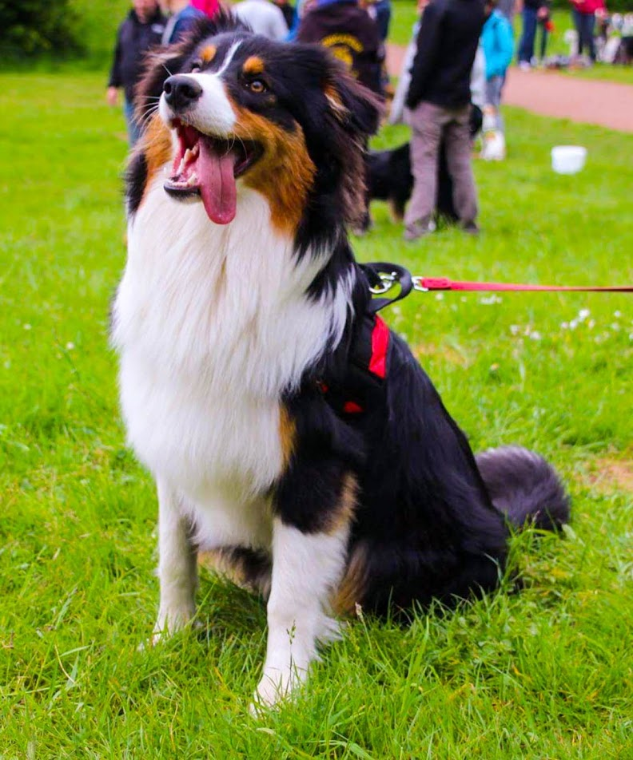

Né en 1999 à Lille, fan de sport et d'informatique depuis cette même année, j'ai très vite pratiqué divers sport. Tennis, Basket, Judo, Foot...
Le sport
Je me suis donnée le défis d'effectuer un IronMan, 3.8km de nage, 180.2km de vélo puis un maraton donc 42.195km de course à pied. Je m'entraine donc tous les jours pour atteindre cette objectif à base de musculation quatre fois par semaine, course à pied tous les jours avec le toutou qui est juste en-dessous et du vélo lorsque le temps me le permet. C'est cette objectif qui me permet de me détendre à côté de l'informatique.
Les animaux
J'ai toujours vécu avec des animaux depuis très petit. J'ai donc voulu avoir un chien. Ce gros toutou là, c'est donc mon chien. Drake ! Il me permet de réunir ma passion pour les animaux et le sport, je cours avec lui régulièrement.
Je possède également deux chats, Diamand et Crystal.
Jeux Vidéos
Entre l'informatique, le sport et les animaux il me reste rarement du temps libre, mais quand il m'en reste, je le complète par les jeux vidéos.
Indépendant
Je vis en colloc avec un ami, étudiant également, à Epitech.
Divers
Je possède des goûts très divers au niveau musique, de la musique classique au rock, jusqu'à Charles Aznavour où encore jusqu'à Orelsan.
J'aime beaucoup voyager et je souhaite continuer de voyager régulièrement. Je pars d'ailleurs à l'étranger pendant 1 an lors de ma 4ème année à Epitech.